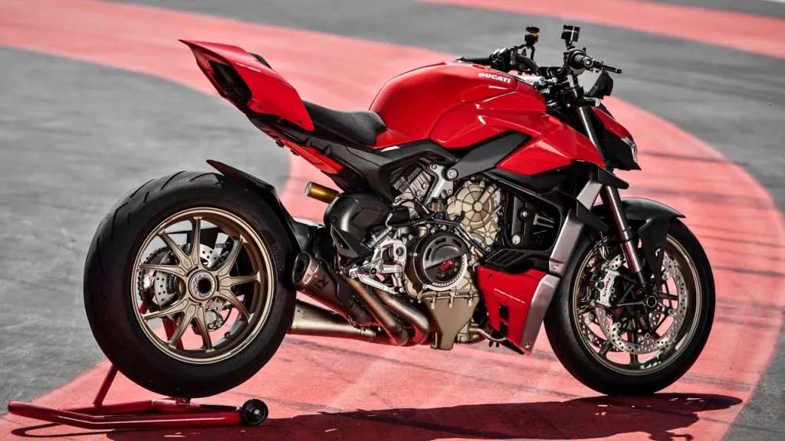
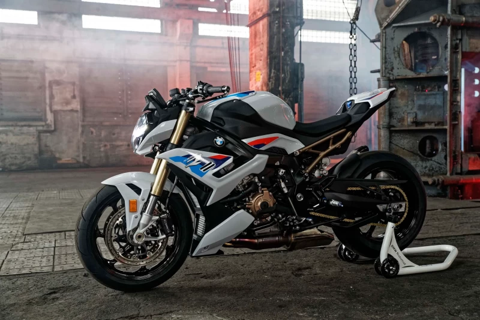
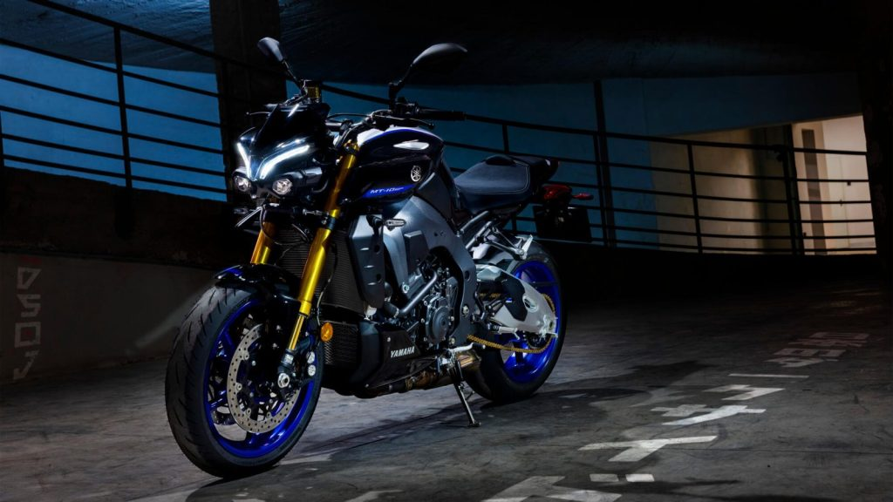

MOTOCYKLE NAKED
Naked bike (z ang. nagi motocykl) – kategoria motocykli. Są one pozbawione owiewek (w tym również szyby), które szczelnie zasłaniają silnik. Charakteryzują się bardziej odprężoną pozycją kierowcy. Ich stylistyka nawiązuje do klasycznych motocykli. Ze względu na brak owiewek są również potocznie nazywane „golasami”.


